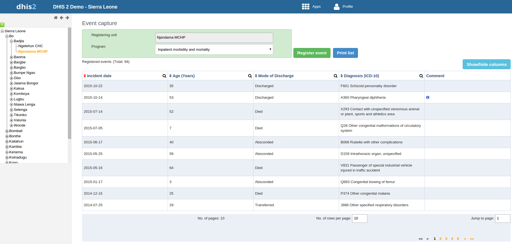

Table of Contents
Example event list
|  |
In the Event Capture app you register events that occurred at a particular time and place. An event can happen at any given point in time. This stands in contrast to routine data, which can be captured for predefined, regular intervals. Events are sometimes called cases or records. In DHIS2 events are linked to a program. The Event Capture app lets you select the organisation unit and program and specifiy a date when a event happened, before entering information for the event.
The Event Capture app works online and offline. If the Internet connectivity drops, you can continue to capture events. The events will be stored locally in your web browser (client). When connectivity has returned, the system will ask you to upload the locally stored data. The system then sends the data to the server where the data is stored.
![[Note]](resources/images/admon/note.png) | Note |
|---|---|
If you close the web browser while in offline mode, it is not possible to reopen a new web browser window and continue the working session. However the data will still be saved locally and can be uploaded to the server the next time the machine is online and the you have logged into the server. |
Sorting: this can be done by clicking the sorting icon of each column header. A red sorting icon implies the current sorting column. However, the sorting functionality works only within the page displayed. Currently, it is not possible to do sorting from serverside.
Filtering: this is done by clicking the small search icon shown to the right of each column header. Clicking them provides an input field to type a filtering criteria. The system starts applying the filter the moment a user starts to type. During filtering it is possible to define start and end dates for date type data elements and lower and upper limits for number types. Server side filtering is not-support at the moment.
Paging: The list of events can be paged by using the paging section at the bootom of the list. Paging allows you to quickly move between pages of events and to change the page size, i.e. the number of events per page.
Another feature available in the Event Capture app is skip-logic and validation functionality. Using program rules engine it is possible to put some rules for a program and take some actions when the rules are met. Currently supported actions are skipping/hiding a dataelement or an entire section, display warning for some soft-validations or display error for hard-validations. For example if a rule defined says "DataElementA > 100" and has action as "show warning" and message "Datalelement A can not have value more than 100". What will happen during data entry is - the moment a value greater than 100 is entered for data element A, the warning message will be dsiplayed. Because, it is just a warning it is still possible to keep the value more than 100. However, if the action is "Show error", the error message will be displayed and the system will also ignore the value - i.e. it is not possible to store a value that viloates the rule.
Together with the rules engine expression evaluation, on-the-fly indicator expression evaluation is also supported. If a program has indicators defined for it and the moment all values related to the indicator expression are filled, the system will calcualte indicator and display the result. A figure below demonstrates this.
Example event list
 |